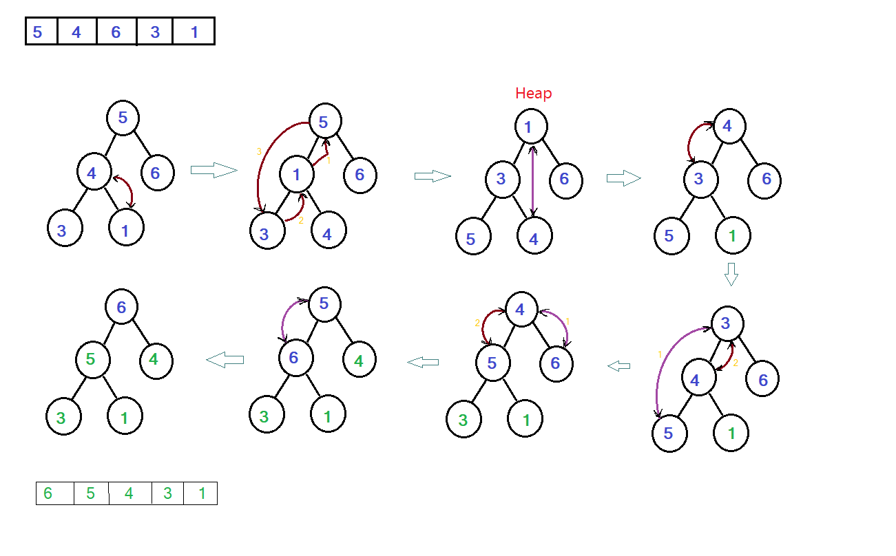

This sorting algorithm requires the knowledge of data structure Heap and binary tree.
- First step is to form a heap from the given list.
- This is done by making the subtrees heap from bottom to up.
- All leaves are heap by default.
- Move upper level iteratively, if at any point, a vertex has larger element than its children
then swap it with the smallest child continue swapping until both children are greater than or equal
to the pointed vertex. This procedure is called Heapify.
-
After the above procedure the subtree rooted at the vertex from which we started will be a heap.
-
Apply Heapify to all the vertices bottom to up. Finally we will have a Heap.
-
Once we have heap. We swap the right most leaf with the root(smallest element).
-
Ignoring the sorted part we apply the heapify at the root vertex with unsorted list.
-
This leads to accumulation of smaller elements at the end. We get a reverse sorted list.
-
If required we can obtain ascending order by reversing the list.
Complexity
- Making a heap is a O(n) procedure.
- Because heapify is O(log2n). (In worst case you might have to swap the root
till the leaf, depth of a complete tree is log2n)
- We apply the heapify to all elements from bottom to top. The size of the tree is variable.
- Summing over the variable depth, we get O(n).
- For heap sort we delete the min element O(log2n) procedure.
Swap the right, bottom element with root (minimum).
Apply Heapify at the root (O(log2n)).
- The above process is continued for n times.
- Although the size of tree is variable the depth is log(n) during heapify for half of the
elements.
- Thus it is a O(nlog2n) (worst case)
Illustration.

Heap sort code